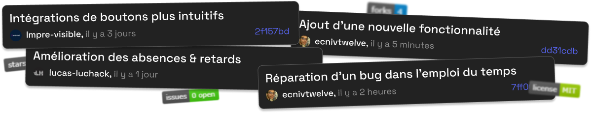
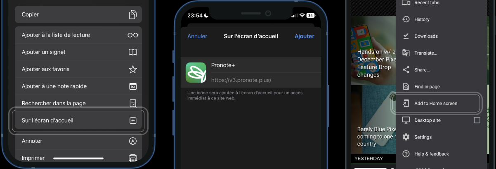

Demandez plus de Pronote.
Pronote, c’est une des apps les plus téléchargées chez les 13-18 ans. Et pourtant, c’est une app qui n'est pas si simple à utiliser. Il est l’heure de rendre l’école plus intuitive.
Gratuit
Open-source
Simple & intuitif
Développé ensemble
Extensible
Mais pourquoi faire ?
J’utilise Pronote depuis 5 ans sur mon téléphone, et j'expérimente toujours la même chose. C’est lent, difficile à utiliser, pas très beau, peu personnalisable, et flou sur ce qui se passe derrière. Je me suis dit que s’en est assez et j’ai créé mon client alternatif.
Open quoi ?
Pronote+ est open-source. Cela veut dire que n’importe qui peut voir ce qui se passe derrière et y contribuer un peu de son temps et de ses idées. Cela fait une app communautaire et vivante.
Okay mais comment vous faites de l’argent ?
On en fait pas. Non il n’y aura pas de publicités. Non on ne vend pas vos données.
Télécharger Pronote+
Ajoutez simplement cette page à votre écran d'accueil pour commencer.
